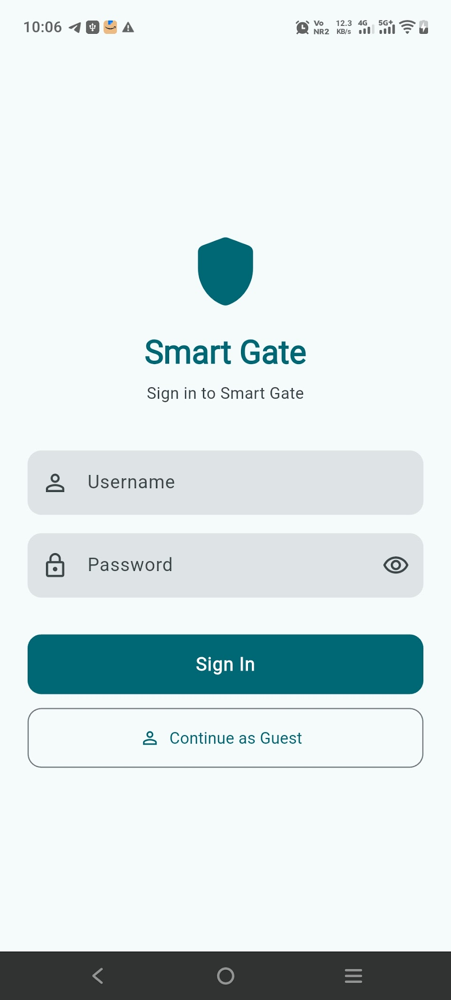

ANPR Smart Gate Tracker
Offline gate and visitor tracking for apartments.
ANPR Smart Gate Tracker is an Android app for apartment communities that scans vehicle number plates at the gate and logs entries, exits and visitors. Plate reading runs on the device, and the app is built to work offline.
Also known as: Smart Gate, Smart Gate - ANPR Security.
- Camera number-plate scanning, with text recognition done on the phone
- Resident and visitor records with flat numbers and visit purpose
- Entry and exit logs with the operator's name for audits
- Admin, Operator and Viewer roles, Excel and CSV exports, optional Google Drive backup


More screenshots

Key facts
- Platform
- Android
- Built for
- Apartment associations, security staff and property managers
- Works offline
- Yes, primarily offline
- Sign-in
- Google (Firebase Authentication)
- Price
- See the Google Play listing
Frequently asked questions
Is number-plate scanning done in the cloud?
No. Text recognition runs on the device, and the entry database is stored on the device.
Who is it for?
Apartment communities: administrators, gate operators and viewers with different permissions.
Does it work without internet?
Yes, the app is designed to work primarily offline. Internet is used for sign-in, licence checks and Google Drive backups.
How do I delete data?
Community administrators can delete entries or clear the log in the app. See the privacy policy for the account deletion request form.
More help: ANPR Smart Gate Tracker support · Privacy policy